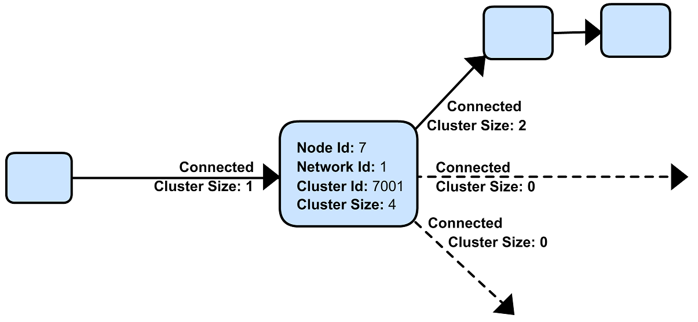
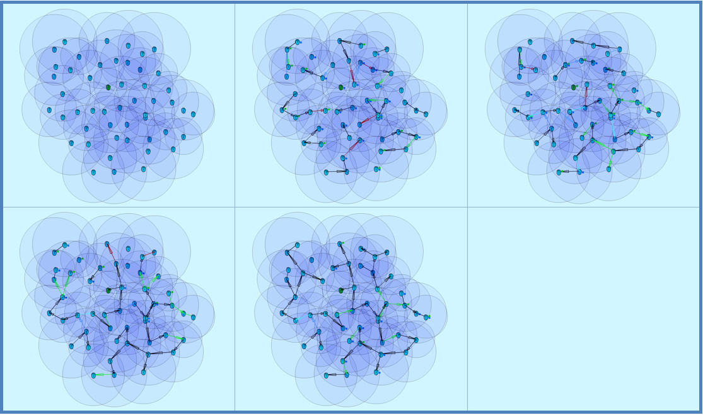
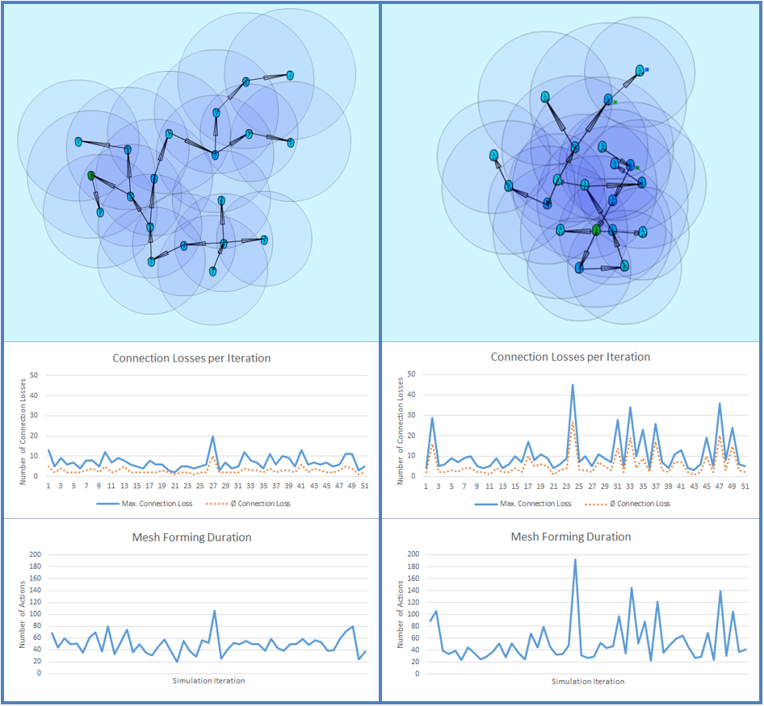
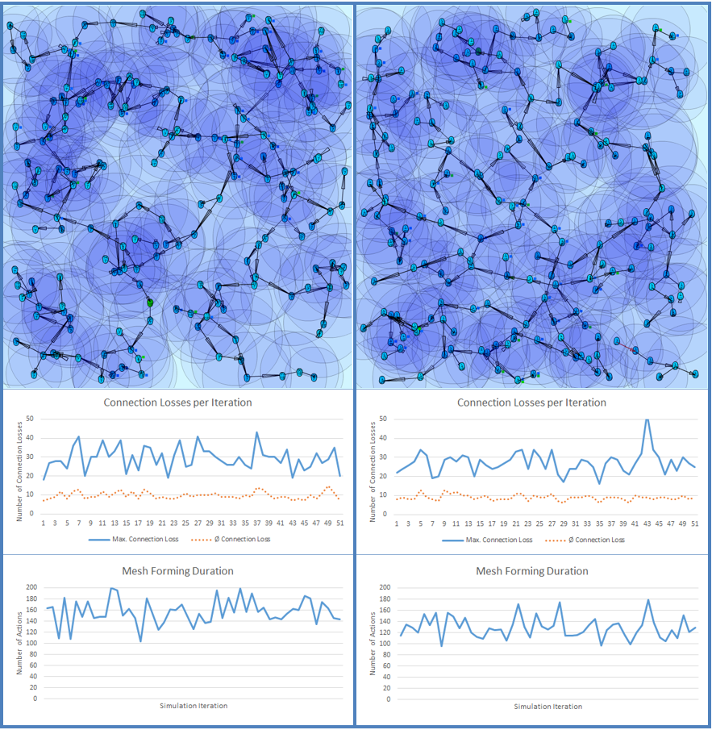
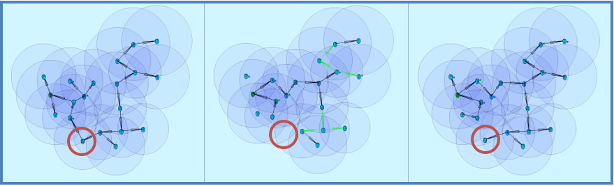
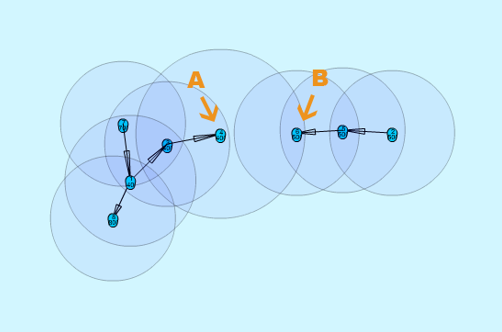
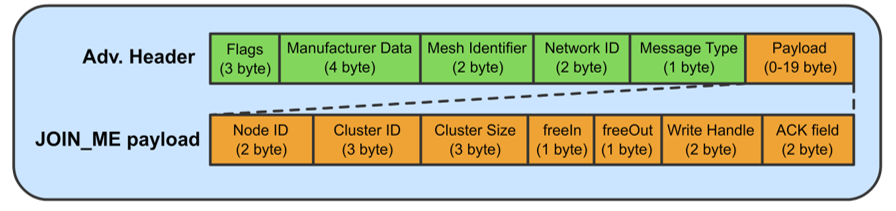
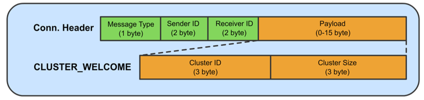
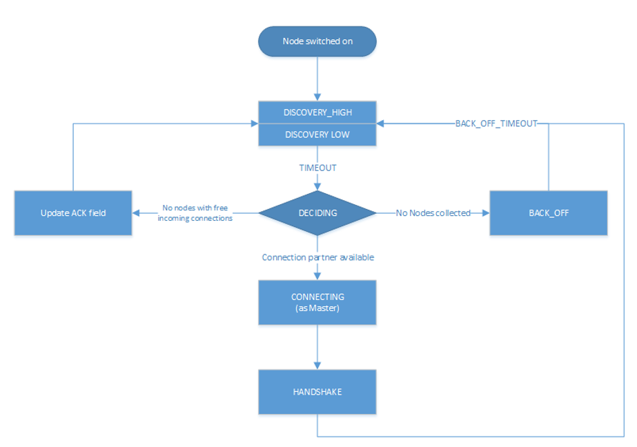

FruityMesh Algorithm in Detail
Be aware that small parts of this documentation are outdated. Changes have been made to the state machine and the slave connection procedure and are not documented yet.
The final algorithm is presented here and offers a solution for building a graph which is only based on the knowledge of surrounding nodes. It enables automatic meshing that is functional and constructs a spanning tree with all reachable nodes. Loop building is effectively prevented. It is self-healing in case of node loss or short-lived node failure and can be optimized for a number of use-cases by customizing a cluster score function. This results in different spanning tree configurations. Nodes can be switched on at different times and even after the route setup has finished.
The Idea
Every node is always part of a cluster with a unique Cluster Id which is generated by the founding member. A single node with no connections represents a cluster with the size of one. Only nodes that are part of different clusters will connect to each other and exchange their cluster information. This information is evaluated in the Cluster Score function. The node that is part of the bigger cluster can decide which connections it wants to make and will convert nodes from smaller clusters to its own cluster. The increased cluster size must then be reported back to the rest of the cluster. Size information will be passed through the existing connections which is an energy efficient way of distributing information. If nodes disconnect from a cluster either voluntary or because of timeouts, the size of the cluster must be decreased according to the number of nodes that were lost. This requires each node to save the quantity of connected nodes for each active connection.
Node Initialisation
Before a node can join a network, it must be assigned a Node Id and a Network Id. In case of an encrypted network, it must also possess the network encryption key that will be shared among all nodes in the network. The Node Ids do not have to follow a scheme but must be unique for that network. The Network Id allows different networks to coexist in the same physical space. These values are configured in the enrolment process. After booting, a node generates a new Cluster Id based on its Node Id and the total number of connection losses. The initial Cluster Size of a node must be set to 1. A value called Connected Cluster Size must be saved for each of the possible connections (1 outgoing, 3 incoming) and is initialized with 0. 7 depicts a node that is directly connected with two other nodes and gives an overview of the stored values.
 Figure: Example of the stored values in a node
Discovery
During the discovery phase, a node will constantly broadcast its Node Id, Cluster Id and its Cluster Size in an advertising packet. This packet has been called the JOIN_ME packet and can also include further attributes that other nodes use to calculate the Cluster Score. The advertising packet must be connectable if the incoming connection is still free, otherwise it is non-connectable.
Between sending these advertising packets, a node must scan on all advertising channels for packets of surrounding nodes. These are collected in a buffer and only the most recent packet from a node is saved with a timestamp of the reception time.
Route Setup
After a predefined amount of seconds, a node calculates its best connection partner based on the collected JOIN_ME packets. At first, it looks for nodes that have a freeIn connection and tries to connect as a master. Each packet is evaluated with the Cluster Score function, which returns a connection score. This score is zero if the node belongs to the same cluster or if the other cluster is bigger. (If both are similar//TODOm: similiar or the same?/ in size, the Cluster Id is used to determine the winner). After processing all packets, the algorithm tries to connect to the highest ranked node. Therefore, it needs to listen for another advertising packet which it will answer with a connection request. In case of success, the two nodes must then perform a handshake.
Before the handshake is finished, the newly connected node cannot participate in the network and must not send any packets except those belonging to the handshake. Both nodes start the handshake by sending a CLUSTER_WELCOME packet which includes the latest information about their Cluster Size and Cluster Id because the available information might already be outdated. This can result in a few different cases:
a) If they already belong to the same cluster, they must disconnect because they are already linked through other nodes. This is done to ensure that there is not more than one link between nodes of the same cluster. in the same network.
b) If they have different Cluster Ids, one of the nodes will have a smaller Cluster Size (In case they are equal, the value of the nodeId decides). This node must then disconnect all other connections and must join the bigger cluster. It saves its new Cluster Id and the Cluster Size which it increments by one. Afterwards, it sends a CLUSTER_ACK packet to its connection partner that confirms its entrance to the cluster. This marks the end of the handshake. After the partner has received this packet it will increment the Cluster Size and it will send a CLUSTER_UPDATE message to other nodes that informs them of the size change. The packet contains either a size increment or decrement and not the absolute size of the cluster. Sending the absolute value would not work because there is no guarantee that all nodes hold the same Cluster Size at one time.
Cluster Size decrements will be sent as soon as a node encounters a disconnection for any reason. Because it knows the number of nodes that were connected through this connection, it can send the appropriate decrement message. This even works in a situation where the other node fails to respond and a timeout is generated.
After disconnecting from nodes of the same cluster, there are two separated networks with the same Cluster Id. Because that would result in the forming of islands (disjoint clusters), the smaller cluster has to distribute a new Cluster Id. The new Cluster Id is sent with the same CLUSTER_UPDATE packet that contains the size decrement after a connection was lost. The new Cluster Id is based on the Node Id that just lost the connection. To generate the new Cluster Id, the connection loss counter is merged with the Node Id to ensure that the same Cluster Id is not in use twice which would result in two disjoint clusters with the same id.
Route Maintenance
Nodes that belong to bigger clusters can always decide which connections are made and will dissolve smaller clusters. If adjacent devices are switched on one by one, they can instantly connect to the mesh. But if two different cluster meet at one point, the bigger cluster will force the small cluster to reform until there is only one cluster left.
After the network has been formed, the JOIN_ME packets will all advertise the same Cluster Id. This will gradually cause all nodes to switch to a lower discovery mode when no changes are detected for a long time. They will then scan the network less frequently and send fewer advertising messages. It is possible to switch off discovery entirely after all known nodes have connected to the network but this will prevent any new nodes from joining the network. If a node is disconnected, it will be able to join again because its previous connection partner will notice the disconnection and will then switch on discovery.
The network will always try to reconnect to disconnected nodes because they will have a different Cluster Id after the disconnection. Alternative routes are formed as well which means that the network is self-healing.
Routing
Routing in the spanning tree of the network has not been a major focus because of the variety of solutions that are already available. Some ideas and thoughts are provided for a number of different types of messages.
Broadcast messages do not require any form of routing. A broadcast message can originate from either a sink or from any node in the network. It is then retransmitted through every connection except the connection from where it was received.
Node to sink messages are considered to be another common message type. If we assume that the number of sinks in a network is a low number then each node can hold a simple routing table that contains the Node Id of each sink and the appropriate connection with which they can be reached. This information must be broadcasted by a sink when it initially joins the mesh and is propagated with the CLUSTER_UPDATE messages. When coupling this information with a hop counter, it is possible to route information to the closest sink when required.
One can also use a simpler implementation where each connection is only denoted with a Boolean that specifies whether any sink is reachable through this link or not.
Node to Node messages are the most complex scenario because a node may not be able to hold a full routing table with its limited memory resources. In this case, distributed routing tables, data centric routing or other techniques must be considered for optimization. Otherwise, messages will need to be broadcasted.
Sink to Node messages are similar to the previous category. In many scenarios, a sink will be connected to another network or to a device with more resources in terms of processing power and memory. This device can hold a number of network quality measurements and an inventory of connected nodes. If each node provides its connection partners it is then possible to build a full routing tree and use this information for more intelligent routing e.g. by adding routing information to a packet.
Some use-cases will also require to separate the network in a number of groups. If the number of groups is low enough to be kept in memory, each node may employ a routing table for routing to different groups.
Evaluation
A simulation has been implemented to evaluate the proposed algorithm. A number of improvements have been incorporated to tweak the algorithm’s performance based on this simulation. In its final form, the algorithm produced a connected mesh network in all cases in a number of simulations. Routing has not been implemented and only broadcast messages are supported. Some of the simulation results are shown in the next section.
Results
A number of different node setups have been evaluated and the simulation results have been plotted. All nodes were switched on at the same time.
The simulation shows that most networks look random at the beginning but once a bigger connected cluster has been established, it will begin to dissolve smaller clusters and will absorb them as seen in 2, where the final cluster starts forming from the lower right.
 Figure: Captures of the clustering phase (top left to bottom right)
It is visible that smaller clusters dissolve and must restructure after connection with a bigger cluster. This could be avoided in some cases. Further research must show whether a new Cluster Id can be distributed in a way that leaves both clusters intact and joins them together.
Sparse and Dense Network Configuration
 Figure Comparing a sparse (left) and a dense (right) 20-node setup
A direct comparison between a sparse and a denser node setup shows that the connection losses and the average connection time are higher when each node can choose between many connection partners. This seems counter intuitive at first because more connection partners should result in a faster network setup. But it is visible that clusters tend to reconnect and dissolve often. The dense setup also shows that nodes do not connect to their nearest neighbours because the RSSI has not been used in the Cluster Score function.
Choosing better parameters should therefore be an important topic of future research as well.
High Number of Nodes
 Figure: Comparing two different setups with 200 nodes
The time it takes to form the network increases approximately linearly with the number of nodes involved while the number of average connection losses will top out at about 10. (The maximum number of nodes that were simulated is 400.) The number of sent CLUSTER_UPDATE packets does also increase linearly with the size of the network.
This can possibly be improved by buffering and sending less packets if they are only used to report an increased cluster size.
Self-Healing
 Figure: Self-healing process (left to right)
The algorithm provides self-healing capabilities. Once a node is removed (seen in the second picture of 5), the nodes to the left will rearrange to join the cluster through a different route. If this previously removed node is switched on again it will be reconnected to the cluster, but only as a leaf node and not as an integral part of the network. This results in separation of failing nodes from the core of the network and therefore enhances the stability during its lifetime. Broadcasting a connection loss metric with the JOIN_ME packets could therefore allow the algorithm to form more stable networks by rating nodes based on their connection stability.
Slave Connection Procedure
Sometimes, a node cannot connect to a smaller cluster because the only reachable node is already connected by another master and has thus used up its incoming connection. We must then tell the node to disconnect its current connection. This can have some side effects.
 Figure: Problematic connection situation
When node A broadcasts its JOIN_ME packet, node B must disconnect from its current cluster. After node B has disconnected, it will start advertising and node A will try to connect to it. This will fail because node B is not able to physically reach node A because of its limited send range. This results in permanent disconnections and battery depletion and must therefore be solved.
One solution is to add an ACK field to the JOIN_ME packet, which can contain a Node Id. Node A can set this field to the Node Id of node B, which it will only know if it already received JOIN_ME packets from node B previously.
Node B will then receive this packet and must now disconnect its connection and advertise its presence so that node A can establish a connection. This will again result in another problem because its previous cluster might try to connect again.
In the current implementation, node B will set the Node Id of node A in the ACK field of the JOIN_ME packets to signal its preferred connection partner, but it has to be evaluated whether directed advertising messages provide better results. Using the slave connection procedure takes more time because of this challenge and response scheme.
Implementation
Packet Structure
Because of the limited number of bytes that can – and should – be transmitted between devices, it is necessary to implement a binary communication protocol. All data types and packet declarations can be found in inc/types.h.
Some of the most common data types are:
The nodeID has a size of 2 bytes which allows for a theoretical limit of about 65,000 uniquely identifiable nodes per mesh network. This does also determine the maximum clusterSize with an identical length of 2 bytes.
The clusterID uses 4 bytes because it must include a nodeID and a Connection Loss Counter.
The number of freeIn connections and freeOut are combined into one byte by using a bitmask.
Advertising Packets
Advertising packets make use of the Manufacturer Specific Data AD Type to broadcast their mesh related data.
 *Figure: Structure of a JOIN_ME packet *
The 2 byte Company Identifier that is part of the Manufacturer Specific Data header has been set to 0x024D which is the registered company identifier of the M-Way Solutions GmbH.
A Mesh Identifier has been selected with a length of two bytes that shall be used to check if the packet is intended for FruityMesh (0xF0). This allows for multiple protocols with the same Company Identifier.
The Network Identifier allows to have multiple networks in the same physical space and prevents mix-up of discovery packets.
The last value that belongs to the custom advertising message header is the Message Type, which allows to send a total of 256 different messages of which only 4 are currently defined. One of these messages is the JOIN_ME packet that is explained here as an example.
The JOIN_ME packet contains all the information that a receiver must know to decide whether it wants to connect to this node or not. This includes the Node Id, Cluster Id, Cluster Size and the number of free connections. Further research must show if additional data should be integrated in this packet.
The Write Handle is used to transmit a GATT handle that the mesh implementation uses for communication between two connected nodes. In order to skip the Service and Attribute Discovery, this is sent in the JOIN_ME packet.
Connection Packets
Connection packets do always include the Message Type, Node Id of the sender, and that of the receiver. Larger packets are automatically split by the implementation and transmitted in subsequent packets.
 Figure: CLUSTER_WELCOME packet structure
The shown CLUSTER_WELCOME packet is one of the packets that can be sent through connections, and it is the first one that is sent during the handshake once a connection has been build up.
Event Handling
The main function uses an event handling loop that is entered as soon as the initialization phase is completed. The event handler routine blocks as soon as there are no more events to process and lets the device sleep until an event is generated in the SoftDevice. This event handling is thread save and events will be processed in the order in which they are generated. An event will be dispatched to different event handlers for advertising, scanning, services and connections where it is either pre-processed and then delegated to the C++ classes or completely handled.
Because cluster size changes are communicated through increase or decrease messages, it is important that a node always handles these messages correctly because a failure to do so will result in inconsistent data.
Node States
The algorithm uses a state machine to manage its tasks, which is represented in a simplified form here:
 Figure: Simplified FruityMesh state flowchart
After a node is initialized, it enters the DISCOVERY_HIGH state in which it tries to connect to other clusters as soon as possible. After a timeout of a few seconds, it changes to the DECISION state where it decides whether it wants to connect to another cluster. If no other cluster was found, it sleeps for a few seconds in the BACK_OFF state to conserve energy. After several loops without finding another cluster, it will use the DISCOVERY_LOW state instead of DISCOVERY_HIGH. This allows the node to save more energy by scanning and advertising less and is important when a node is switched on in places without other nodes or if the network has been fully discovered. The node will change to the DISCOVERY_HIGH state again as soon as it receives a packet from a different cluster.
When a smaller cluster has been found, the node attempts to connect to it (CONNECTING) which is followed by a handshake procedure (HANDSHAKE).
The ACK field is updated as part of the Slave Connection Procedure.
DISCOVERY States
The DISCOVERY_HIGH and DISCOVERY_LOW state do only differ in the duty cycles of advertising and scanning operations and the timeouts.
In these states, a node alternates advertising and scanning for JOIN_ME packets. If a packet is received, it is saved to the JOIN_ME buffer with a timestamp. An older JOIN_ME packet from the same node is always overwritten in the buffer. Old packets are also replaced when there is no more space in the JOIN_ME buffer left. No further processing is done in the DISCOVERY states.
DECISION State
The buffered packets are evaluated with the cluster score function in order to determine the best connection partner. At first, the node tries to find a connection partner that can accept an incoming connection. It will try to connect if one is found. If there are no good candidates available, it tries to invoke the Slave Connection Procedure that has been explained previously. If there is a packet in the buffer that contains its Node Id in the ACK field, it must disconnect its connections and change to the DISCOVERY_HIGH state again.
Connections
While the ATT protocol is not the best fit for managing data streams it can be made to work in such a way. This has been done by implementing a mesh Service with a single Characteristic that is used to transfer data. Both connected devices are allowed to send Write Commands/Requests which trigger an event handler on the receiving side. This enables a bidirectional connection.
Because every device knows the Node Id of its connection partners, it is possible to implement a GATT bridge. This would allow us to exploit the strength of the GATT protocol and use all of its features over the mesh. With a GATT bridge, it is also possible to query existing BLE devices over the mesh that are not capable to work in a mesh. This is a key feature that should be implemented in a future version.
Handshake
After discovering the handles, the mesh has to perform a handshake during which both nodes send their current cluster information (CLUSTER_WELCOME). The connection is only set active after this handshake has finished and is not used to relay any data in the meantime.
Active Connection
An active connection can receive data packets and relay them to other nodes. A message is relayed to all connections if the destination Node Id is set to 0, which signifies a broadcast packet. There are multiple types of possible messages. CLUSTER_INFO_UPDATE messages are used to transmit the latest cluster size and id. Other important messages have their own type while user-messages should be encapsulated within Module messages.
Further Ideas
By using data aggregation, it is possible to combine multiple packets in one packet. This reduces the overhead of the protocol and can be used to save energy. Advanced algorithms for data compression and filtering can be used as well. But these can all be implemented on top of the protocol without altering its functionality.
The Cluster Score function can be altered to take several aspects into account. For example broadcasting the remaining battery resources in the JOIN_ME packet will result in a network that is first built with devices with extended power supplies. After the core network has been built, it will be joined by the remaining devices with less battery capacity. These will have to manage a lower number of links and data packets. It is also preferable to include the Received Signal Strength Indicator (RSSI) in this packetin combination with a dynamically configured TX powerin order to achieve stable links that need less transmission power and have a higher robustness against interference.
Smartphones and other moving devices should broadcast a mobile-flag in their discovery packets in order to be excluded from the network’s core. It is better to add moving devices as edges to the network tree so that the network does not need to constantly reform.
Connection timeouts must be chosen in a way that connection loss is only encountered sparsely to prevent the network from reconfiguring. The timeout should depend on the environment in terms of interference and physical facts and on the speed at which the network must react to changes.
Connection properties like Slave Latency and Connection Interval can be handled between two nodes independently from the network. If both are connected to power they can agree on a small connection interval. This would reduce the hop latency and improve overall network performance. Another improvement that is currently not implemented would require nodes to use a low connection interval for fast network setup and scale down afterwards in order to shorten the discovery time.